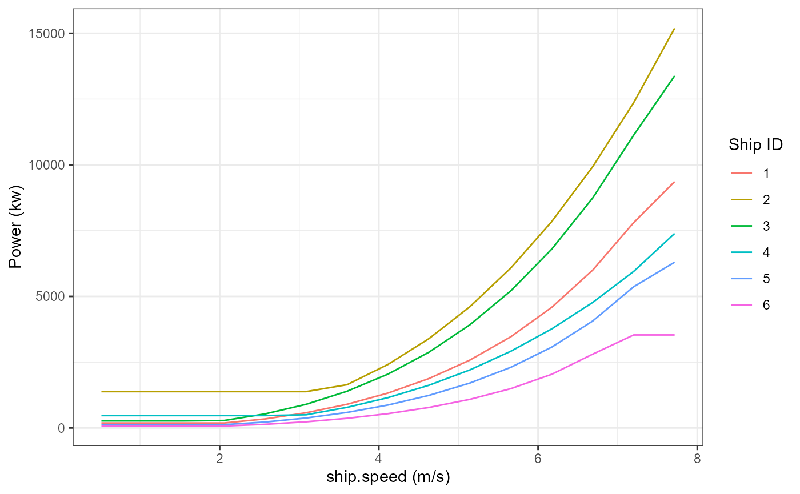

Kristensen.Example.RmdThis example demonstrates how to use the ShipPowerModel package to calculate the propulsive power for a given set of ships traveling within a specified speed range using the Kristensen model. The majority of the calculations used in this example are based on the methods documented in the Ship-Desmo tool and its associated reports (Kristensen Et al.). The calculations in this example are broken into the following sections:
At the end is an example using the calckristPwr() function, which wraps-up and streamlines all of the calculations used in this document.
The needed inputs to calculate propulsive engine power with the Kristensen method are:
ships <- read.csv(system.file("extdata", "Sample.Ships.csv", package = "ShipPowerModel"))
ships$ID <- c(1:6)
ships <- ships[, c("ID", "ship.type", "dwt", "lbp", "breadth", "Displacement", "maxDraft", "actualDraft", "MCR", "service.speed")]
names(ships) <- gsub("Displacement", "maxDisplacement", names(ships))| ID | ship.type | dwt | lbp | breadth | maxDisplacement | maxDraft | actualDraft | MCR | service.speed |
|---|---|---|---|---|---|---|---|---|---|
| 1 | bulk.carrier | 70000.00 | 214.4600 | 32.25000 | 80097.00 | 13.570000 | 12.480000 | 9363 | 14.58 |
| 2 | container.ship | 191144.00 | 396.3069 | 49.00000 | 238941.87 | 15.600000 | 14.149603 | 69029 | 23.00 |
| 3 | tanker | 130000.00 | 256.8100 | 45.47000 | 151488.00 | 15.520000 | 14.310000 | 13384 | 15.00 |
| 4 | container.ship | 39437.25 | 207.1800 | 32.20000 | 52382.04 | 11.490000 | 11.090044 | 23472 | 20.50 |
| 5 | tanker | 25500.00 | 159.9798 | 25.47240 | 33047.10 | 9.728098 | 9.046500 | 6300 | 14.70 |
| 6 | bulk.carrier | 10780.00 | 118.4445 | 19.59675 | 14068.16 | 7.336176 | 6.826964 | 3535 | 13.43 |
Typically, maximum ship displacement is recorded in tonnage units. Since this package uses internally consistent units, tonnage needs to be converted to cubic meters for the maximum displacement field.
ships$maxDisplacement <- calcDispUnitConversion(tonnageDisp = ships$maxDisplacement,
seawaterDensity = 1.025)Some inputs needed for the Kristensen power calculations are not commonly available, so they are instead estimated from parameters that are available. These include waterline length (lwl), propeller diameter (propDiam), and number of propellers (nProp).
ships$lwl <- calclwl(ships$ship.type,
ships$lbp)
ships$propDiam <- calcPropDia(ships$ship.type,
ships$maxDraft)
ships$nProp <- calcPropNum(ships$ship.type)| ID | maxDisplacement | lwl | propDiam |
|---|---|---|---|
| 1 | 78143.41 | 218.7492 | 6.660150 |
| 2 | 233114.02 | 400.2700 | 9.558800 |
| 3 | 147793.17 | 261.9462 | 7.430400 |
| 4 | 51104.43 | 209.2518 | 6.998270 |
| 5 | 32241.08 | 163.1794 | 5.142599 |
| 6 | 13725.03 | 120.8134 | 4.197789 |
Coefficients of form are typically used parameterize the ship hull shape and size. These include:
Cb)Cbw)Cm)Cp)Any function that requires ship type also offers ship type grouping options in order to determine which ship types should be modeled as tankers, general cargo, ect. In this example, our ship types are: “container.ship”, “bulk.carrier”, and “tanker”. These are already included in our default tankerBulkCarrierShipTypes; however, to show their usage, the groupings are included below. For example, if one of your ship types was a “product.tanker” you might want to add that to the tankerBulkCarrierShipTypes list.
ships$Cb <- calcCb(ships$maxDisplacement,
ships$lwl,
ships$breadth,
ships$maxDraft)
ships$Cbw <- calcCbw(ships$Cb,
ships$actualDraft,
ships$maxDraft)
ships$Cm <- calcCm(ships$ship.type,
ships$Cbw,
ships$maxDraft,
ships$actualDraft,
CmEquationType = "kristensen",
tankerBulkCarrierShipTypes = c("tanker", "bulk.carrier"))
ships$Cp <- calcCp(ships$Cm,
ships$Cbw,
ships$ship.type,
bounds = "none",
roroPaxContainerShipTypes = c("container.ship"),
tankerBulkCarrierShipTypes = c("tanker", "bulk.carrier"))| ID | Cb | Cbw | Cm | Cp |
|---|---|---|---|---|
| 1 | 0.8162747 | 0.8110745 | 0.9945633 | 0.8155081 |
| 2 | 0.7618943 | 0.7540218 | 0.9779499 | 0.7710229 |
| 3 | 0.7995131 | 0.7940145 | 0.9945772 | 0.7983437 |
| 4 | 0.6601056 | 0.6560678 | 0.9792787 | 0.6699500 |
| 5 | 0.7973452 | 0.7923783 | 0.9946233 | 0.7966617 |
| 6 | 0.7902136 | 0.7851223 | 0.9946271 | 0.7893635 |
Using these coefficients of form, we can now calculate the hull wetted surface area. Air resistance can also be estimated using only ship type and maximum ship deadweight tonnage (dwt).
#Wetted Surface Area
ships$wettedSA <- calcKristWettedSA(ships$ship.type,
ships$maxDisplacement,
ships$maxDraft,
ships$actualDraft,
ships$lwl,
ships$breadth,
ships$Cbw,
seawaterDensity = 1.025)To model for the ship’s actual operating conditions, actual displacement is estimated using the ship’s reported draft. The ship slenderness/length-displacement ratio (M) can then be calculated.
ships$actualDisplacement <- calcActualDisp(ships$Cb,
ships$Cbw,
ships$actualDraft,
ships$maxDraft,
ships$maxDisplacement)
ships$M <- calcShipM(ships$actualDisplacement,
ships$lwl)The next set of calculations estimate the magnitude of resistances that the ship must overcome to maintain its speed.
In this example, the ship actual speed will be a defined set of discrete speeds between 1 and 15 kn, over which we will estimate propulsion power. Typically, speed is reported in knots and needs to be converted to meters per second (m/s) for our calculations. After this step, the ships dataframe gets long, so we will not show summary tables for the remaining calculations.
Note that these defined speeds are used to illustrate how to use this function; in practice, the actual speeds could be derived from various data sources, such as Automatic Identification System (AIS) data.
The discrete speeds are defined using c(1:15), merged with the ships dataframe, and converted to m/s using calcSpeedUnitConversion.
ships <- merge(ships, data.frame(ship.speed = c(1:15)))
ships$ship.speed <- calcSpeedUnitConversion(ships$ship.speed)First, we calculate the frictional resistance coefficient (Cf). The frictional resistance accounts for frictional interaction between the wetted surface area of the ship’s hull and the surrounding water. This calculation requires both the temperature and density of the surrounding seawater. For this example, we will assume average values for both: 15 degrees Celsius and 1.025 g/cm3, respectively.
#Frictional Resistance
ships$Cf <- calcCf(ships$ship.speed,
ships$lwl,
15,
seawaterDensity = 1.025)To calculate the residual resistance, we first need to calculate the Froude number. The Froude number relates the ship’s length to its speed to characterize wave and wake behavior along the hull.
ships$froudeNum <- calcFroudeNum(ships$ship.speed,
ships$lwl)Next we calculate the residual resistance coefficients (Cr). Here, we use the same inputs for seawater temperature and density as before.
#Residual Resistance
ships$Cr <- calcKristCr(ships$ship.type,
ships$M,
ships$froudeNum,
ships$actualDraft,
ships$breadth,
ships$Cp)Next, we calculate the incremental resistance (Ca) and air resistance (Caa) terms.
#Incremental Resistance
ships$Ca <- calcKristCa(ships$ship.type,
ships$actualDisplacement)
#Air Resistance
ships$Caa <- calcKristCaa(ships$ship.type,
ships$dwt)At this stage we can calculate the total resistance on the ship’s hull (Rtot). Here, we also apply a service margin of 15% to account for the impact of weather and waves under calm water conditions.
#Total Resistance
ships$Rtot <- calcKristTotalRes(ships$wettedSA,
ships$Cf,
ships$Cr,
ships$Ca,
ships$Caa,
seawaterDensity = 1.025,
ships$ship.speed,
serviceMargin = 15)The next set of calculations deal with how efficiently the ship converts power into forward motion. The first efficiency we calculate is the hull efficiency. The hull efficiency accounts for the fact that energy is lost as the hull accelerates water flowing around it, and as the propeller also pulls water around the hull. The necessary inputs to calculate hull efficiency are the wake fraction and the thrust deduction factor.
The wake fraction (w) accounts for the fact that the water passing around the propeller exists within a boundary layer of water that gets pulled along with the ship. Thus, the velocity of the ship is different than the velocity of the water flowing over the propeller, which impacts the efficiency of power transmission by the propeller.
#Wake Fraction
ships$w <- calcKristWakeFrac(ships$ship.type,
ships$breadth,
ships$lwl,
ships$Cbw,
ships$propDiam,
ships$M,
ships$nProp)The thrust deduction factor (t) accounts for loss of efficiency caused by water being drawn past the hull to the propeller. This water exerts a force opposite to the direction of thrust.
#Thrust Deduction Factor
ships$t <- calcKristThrustFactor(ships$ship.type,
ships$breadth,
ships$lwl,
ships$Cbw,
ships$propDiam,
ships$M,
ships$nProp)Using these terms we calculate the open water efficiency (no), which accounts for how efficiently the propeller converts shaft power into a forward thrust.
# Open Water Efficiency
ships$no <- calcOpenWaterEff(ships$Rtot,
ships$t,
ships$nProp,
ships$w,
ships$propDiam,
ships$ship.speed,
seawaterDensity = 1.025)Next, we calculate the hull efficiency (nh), which relates the force of the thrust generated by the propeller to the ship’s effective towing power.
#Hull Efficiency
ships$nh <- calcHullEff(ships$t,
ships$w)With the above values calculated, we can calculated ship propulsive power for each ship sample and speed. We assume shaft efficiency (shaftEff) is 0.98 and relative rotational efficiency (relRotationEff) is 1.
ships$Power <- calcResistanceShipPwr(ships$R,
ships$ship.speed,
ships$nh,
ships$no,
ships$MCR,
shaftEff = 0.98,
relRotationEff = 1)The plot below shows the power curves calculated for each of the example ships:

Instead of running each of the above functions individually, we can run them all at once to output propulsive power with the Kristensen method using the calcKristPwr function. Note Cb must be still be calculated as an input to this function.
ships$Power <- calcKristPwr(
totalInstalledPwr = ships$MCR,
shipSpeed = ships$ship.speed,
actualDraft = ships$actualDraft,
maxDraft = ships$maxDraft,
shipType = ships$ship.type,
lwl = ships$lwl,
breadth = ships$breadth,
maxDisplacement = ships$maxDisplacement,
Cb = ships$Cb,
nProp = 1,
dwt = ships$dwt,
serviceMargin = 15,
shaftEff = 0.98,
relRotationEff = 1,
seawaterTemp = 15,
seawaterDensity = 1.025,
CmEquationType = "kristensen"
)Kristensen, H. O. “Ship-Desmo-Tool.” https://gitlab.gbar.dtu.dk/oceanwave3d/Ship-Desmo